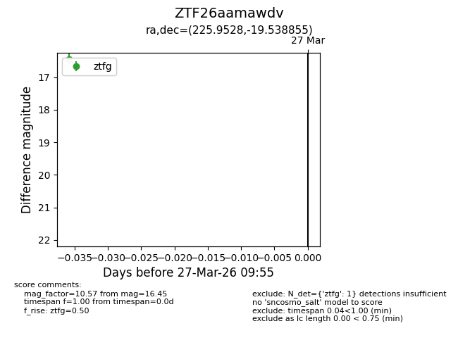
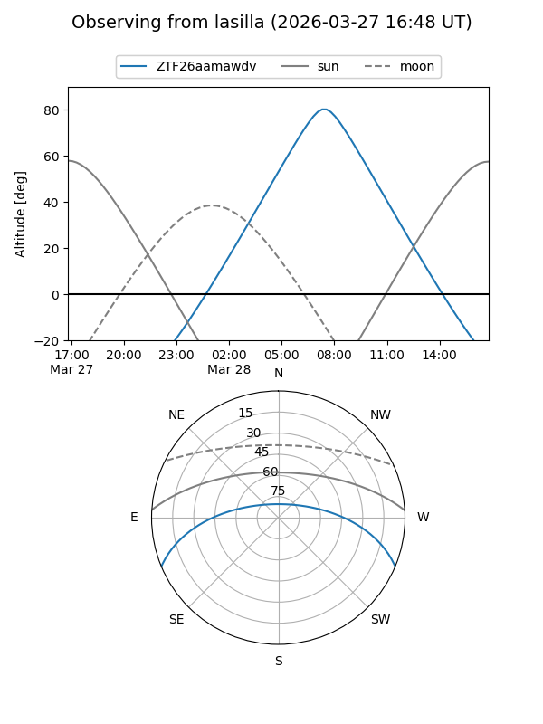
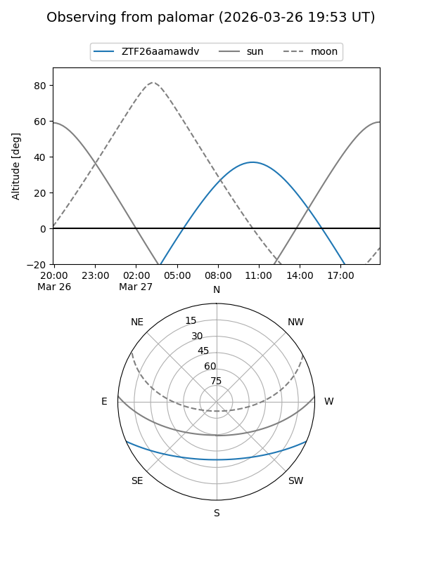

ZTF26aamawdv
Target ZTF26aamawdv at 2026-03-27 09:58
Aliases and brokers:
FINK: link
Lasair: link
ALeRCE: link
alt names
ZTF26aamawdv (ztf,fink_ztf)
Coordinates:
equatorial (ra, dec) = 225.9528,-19.53885
equatorial (HMS+DMS) = 15:03:48.68,-19:32:19.88
galactic (l, b) = (340.9717,+33.37920)
Flags:
Photometry:
last ztfg=16.45
1 ztfg detections
Lightcurve

Visibility


Additional plots